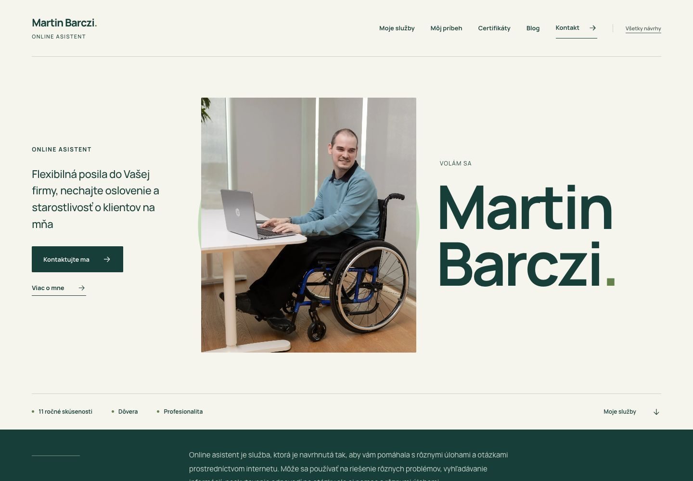
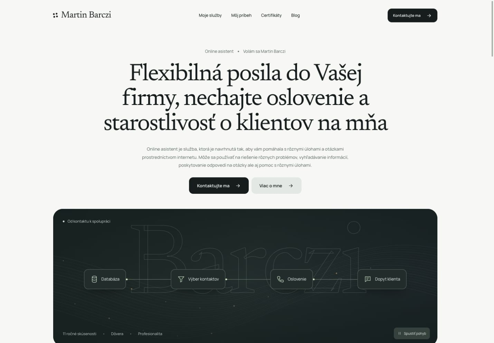
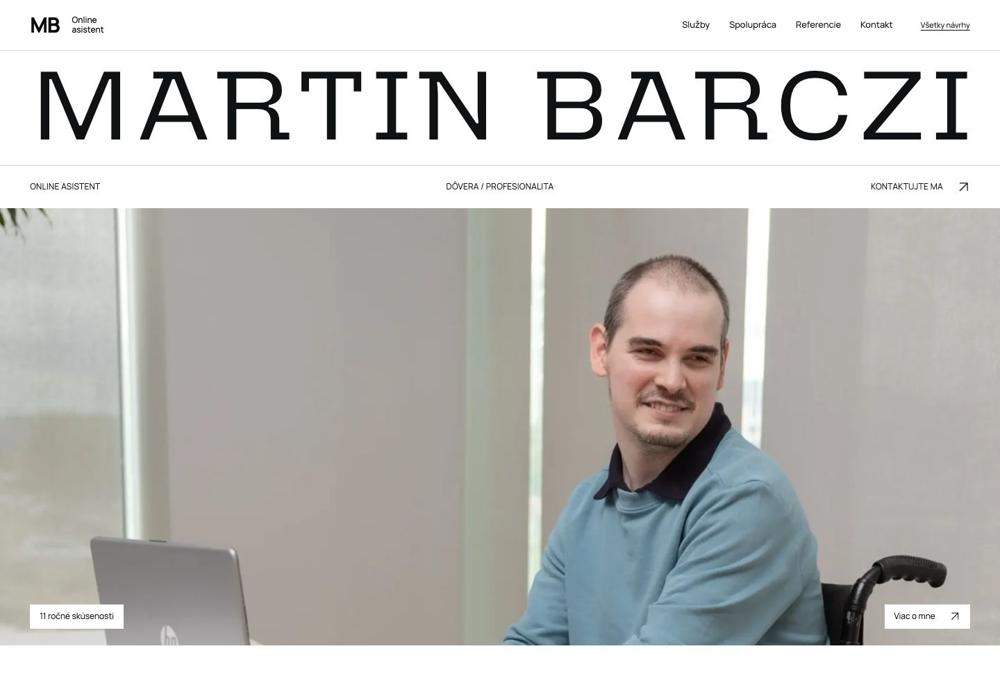
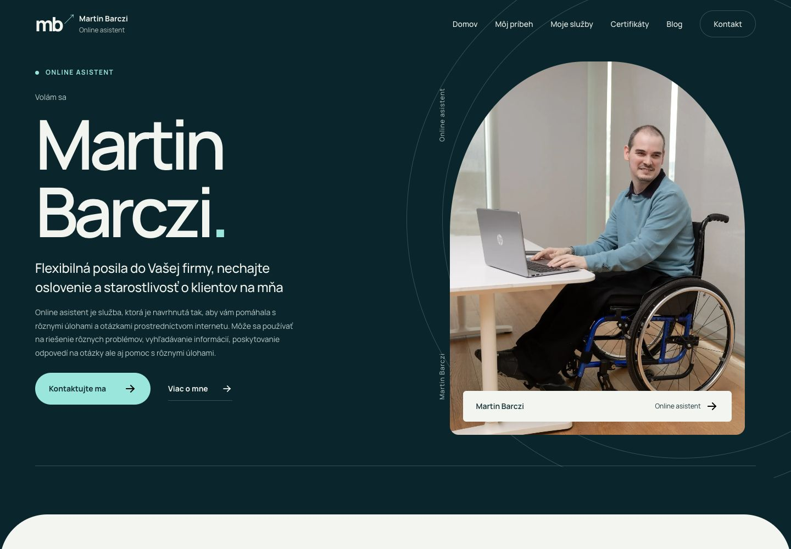

Martin Barczi · Návrhy webu
Jedna práca.
Tri nové podoby.
Rovnaký obsah, iný výraz. Od pokojnej osobnej prezentácie po výraznejšiu stránku v pohybe. Vedľa nich zostáva východiskový draft na porovnanie.




Každý návrh si môžete prezrieť celý. Pri výbere sa dá spojiť to, čo vám najviac sedí — úvod, služby, referencie aj spôsob, akým sa stránka pohybuje.